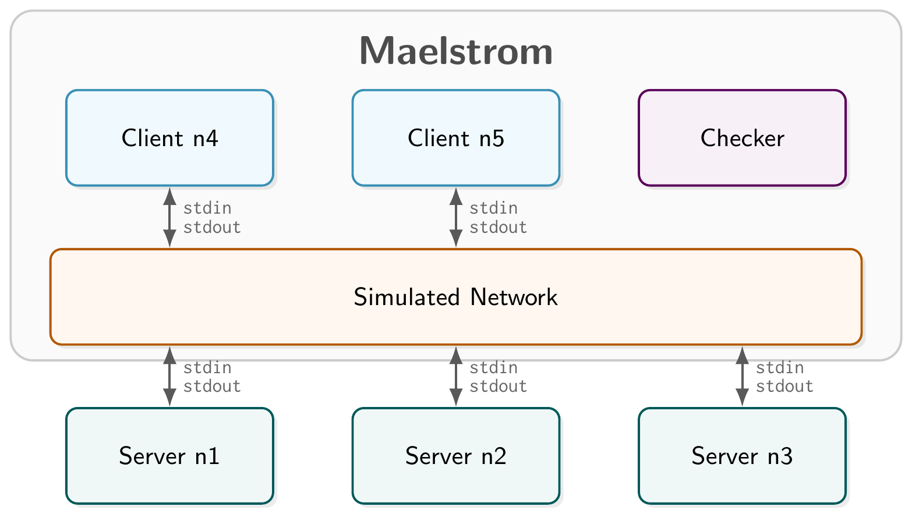
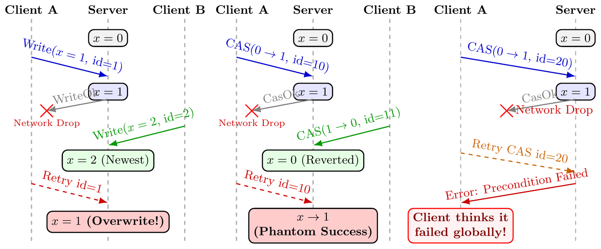
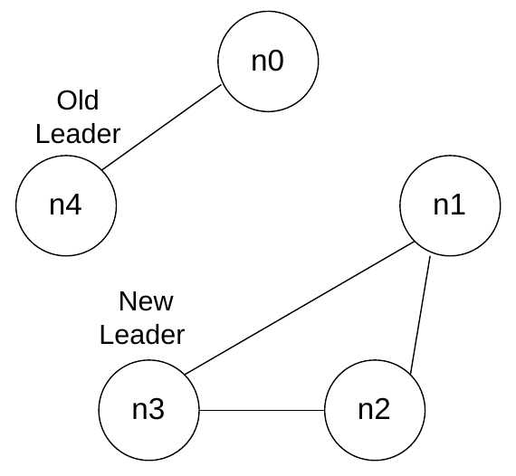

Setup
OmniPaxos-KV is a key-value store that promises linearizability [1] on top of the OmniPaxos replicated state machine [2]. We attack it as a black box with Maelstrom [3]: a simulated network sits between the clients and the server processes, and a checker verifies the recorded history.
The store spoke TCP with numeric node ids, Maelstrom speaks JSON over stdin/stdout with names like n1. A shim replaces the TCP layer, routes client operations to the store and consensus messages to OmniPaxos, and maps the ids.

Retries break compare-and-swap
The first real finding was not a consensus bug. When a reply is lost the client resends, and a server that executes the resend again corrupts state: a retried write overwrites a newer value, a retried CAS succeeds a second time after someone reverted it, and a CAS that had already succeeded is reported as failed.

The fix is exactly-once execution. The replicated state machine keeps a reply cache keyed by (client id, message id) and returns the cached reply for a retry. After a crash the cache is rebuilt by replaying the persistent log before any new request is accepted.
Crashes and partitions
Each node keeps its own write-ahead log, writes its configuration atomically through a temporary file and a rename, and recovers its identity from the first message it receives after a restart. A node killed with SIGKILL comes back without losing data.
We then split the network with the leader in the majority or the minority, as a star and as a ring, and crashed a follower or the leader, with the leader coming back before or after a new one was elected. Knossos [4] checked every history: linearizability held in all of them.
What the runs did expose is availability. With the leader in the minority, requests stall for about five seconds until the majority elects a new leader, and a cold cluster needs up to two election rounds before it serves its first requests. Tuning the election tick is the obvious next step.

References
- M. P. Herlihy, J. M. Wing. Linearizability: A correctness condition for concurrent objects. ACM TOPLAS 12(3):463–492, 1990.
- H. Ng, S. Haridi, P. Carbone. Omni-Paxos: Breaking the barriers of partial connectivity. EuroSys, 2023, pp. 314–330.
- K. Kingsbury. Maelstrom: A workbench for writing distributed systems. 2023. github.com/jepsen-io/maelstrom
- Knossos, the Jepsen linearizability checker. github.com/jepsen-io/knossos